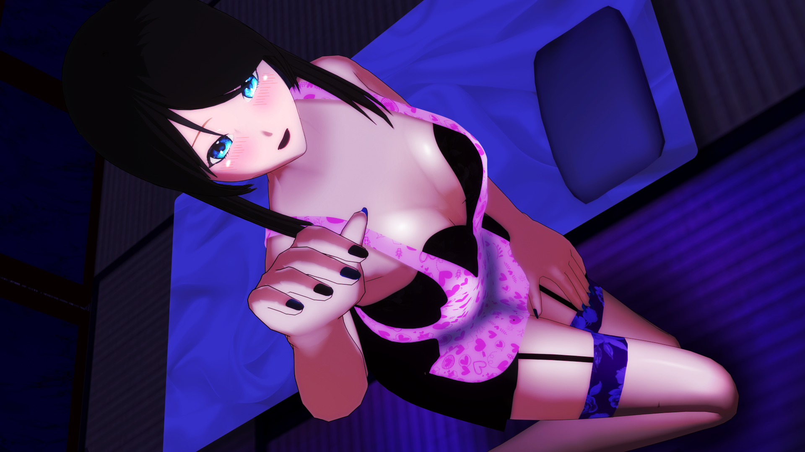

魔物狩りの夜這い
白影ひなみ
「今日は徹底的にいじめてあげる――」
ベッドの中、眠ろうとしていたあなたにひなみが静かに覆いかぶさる。
主導権を奪われ、耳から身体中を責められる。
ひなみが満足するまで、貪られ続ける熱い夜－
—— 魔物との蜜夜 ——
魔物に堕ちたあなたの危険で濃密な体験となります。
イヤホン推奨、必ずおひとりでお楽しみください。
白影ひなみ
「今日は徹底的にいじめてあげる――」
ベッドの中、眠ろうとしていたあなたにひなみが静かに覆いかぶさる。
主導権を奪われ、耳から身体中を責められる。
ひなみが満足するまで、貪られ続ける熱い夜－
ノクティア
「あなたの身体にスリスリしてるだけで…熱くなってきちゃいます――」
普段は清楚で大人しい彼女が豹変、いたずらに責められる夜。
ミニスカートにニーハイソックス、真っ白な美脚をスリスリ…
身体、耳、そして唇を同時に責められる。
全身で彼女を感じてしまう―

エフェリア
「興奮してるのですか、ご主人様――？」
静かな地下室で、エフェリアがあなたを椅子に座らせ、耳元で囁きながらじわじわ追い詰めていく。
優しさと支配が絡み合う、危うい夜。